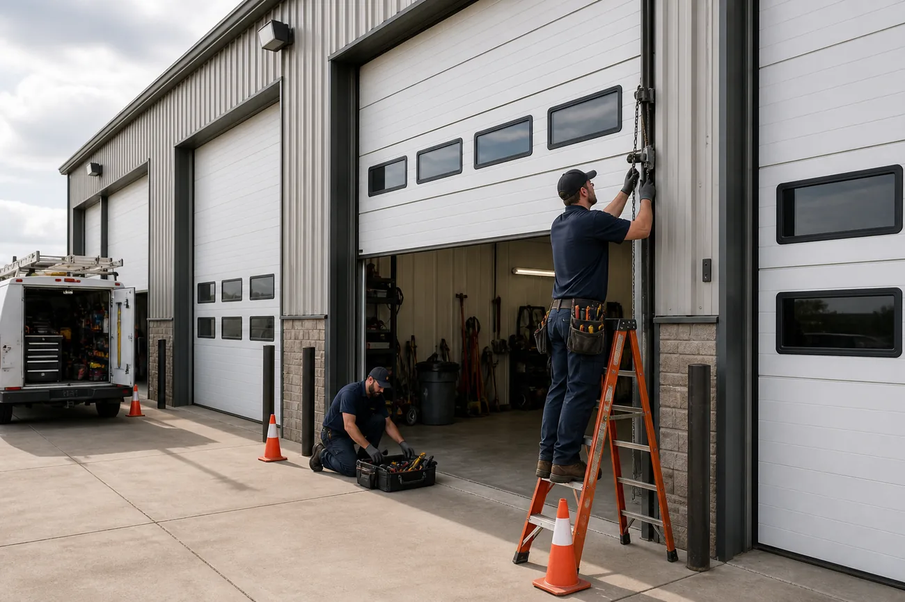

Urgent Garage Door Repair
Help for stuck, noisy, uneven, off-track, or damaged garage doors when safe access matters.
Schedule a service request
Help for stuck, noisy, uneven, off-track, or damaged garage doors when safe access matters.
Connect with independent garage door specialists for repair, installation, maintenance, and replacement options.
Compare practical paths for springs, openers, tracks, panels, commercial doors, and smart controls.
Garage door installation & repair
From repair and replacement to commercial doors, customers can quickly find the service path that matches the door problem.
Want Your Garage Door Repair or Installation? We're Ready To Start!
Call Us Today or Request a FREE QuoteGarage door installation & repair
Clear service paths for repairs, replacements, openers, springs, and complete door systems.
Requests are routed with the right door type, urgency, and service details from the start.
Compare repair, replacement, maintenance, and upgrade options before committing.
Emergency request routing for stuck-open doors, trapped vehicles, and unsafe failures.
Serving homes, rental properties, small businesses, warehouses, and managed buildings.
Customers are reminded to verify provider credentials, insurance, and project terms.
Garage door installation & repair
Customers use to understand the right service path, compare practical options, and connect with local garage door providers for repair, replacement, and urgent access issues.
View All Customer ReviewsThe request form helped us explain the stuck door clearly. A local provider called back with the right questions and walked us through repair options before the visit.
"We were not sure if the opener was bad or the spring was broken. The site made it simple to choose the right category and request urgent help.
"
Residential and commercial
Residential customers usually care about access, noise, insulation, safety, and curb appeal. Commercial customers care about uptime, heavier hardware, bay access, and planned maintenance. The service structure supports both.
Before customers call
This tells a provider whether the issue is mainly access, security, balance, opener travel, or a potentially unsafe off-track condition.
A loud bang often points to spring failure. The door may be too heavy for the opener and should not be forced.
The problem may be a disconnected trolley, broken spring, stripped opener gear, cable issue, or door imbalance. The door and opener should be checked together.